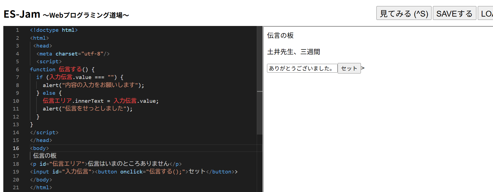
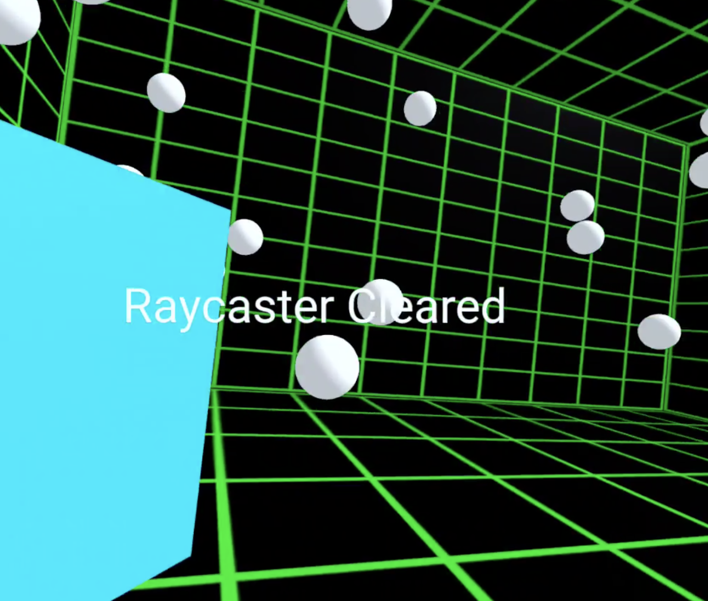

第3週目
3-1 JavaScript体験：VR空間を作る
自作した３次元空間
1.内容
A-FrameとWebプログラミング道場でを用いた、VR空間のプログラムの実習を行い、
スクラッチとは異なった文字でのコーディング体験をすることができた。
2.感想
二次元の画面上で三次元の物体を制作するのは初めてではなかったが、
英語の単語や座標の数値を詳しく設定することは新鮮だった。
3-2 JavaScript体験：伝言プログラムを作る

伝言板
1.内容
JavaScriptで、一から文字を打ち込んでいき、入力したテキスト文章をを表示させてアナウンスしたりする、
伝言板のプログラムを制作した。
2.感想
今まで使ったことのない英語の文字列や鍵括弧の配置の仕方などで、慣れないことが多かった。
少しでも間違えると機能しなくなるため難しいと思うこともあったが、何よりそれ自体をやるのが楽しいと思えた。
3-3 JavaScriptプログラムの３次元空間の体験

1.内容
VRゴーグルを装着して球体と立方体と円柱の立体モデルを見たりつかんだり玉を飛ばしたりして
三次元空間を実際に体験した。
2.感想
三次元の物体をVRゴーグル越しに見ることで、視覚的に理解することができた。
現実的な動きを体験できたため、未来の技術に触れたという実感がわいた。